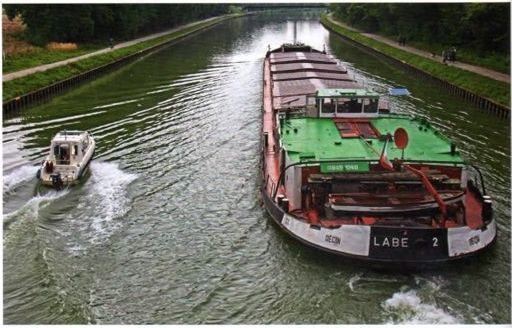
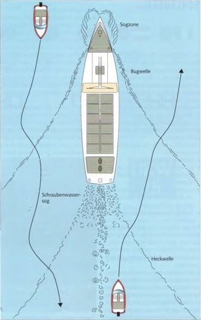

На реках и каналах судоводитель маломерного судна часто встречает крупные суда, толкаемые составы или буксирные караваны либо должен их обгонять. В обоих случаях приходится пересекать их иногда довольно значительные носовые и кормовые волны, а также более мелкие волны между ними. Особенно опасно оказаться между двумя встречными или обгоняющимися крупными судами. Между ними возникает не только сильная перекрестная волна, но и мощное всасывающее течение. Небольшую слабомоторную лодку может развернуть поперек или притянуть к борту большого судна.
Разумеется, все встречи и обгоны следует выполнять на достаточном расстоянии, чтобы избежать зоны всасывания, которая особенно сильна в передней трети большого судна и в его кормовой струе.
► Важное правило: обгонять только тогда, когда виден прямой участок реки длиной около 1 км и более, никогда в поворотах.
Водоизмещающее судно обычно идет медленнее крупного и чаще оказывается обгоняемым. Нужно сместиться в сторону как можно дальше от его курса, чтобы выйти из самой сильной волны, и просто дать лодке спокойно качаться. Особая техника не требуется.
Иначе обстоит дело с глиссирующими лодками. Волны следует пересекать под углом немного меньше 90°. Чем острее угол пересечения, тем выше опасность разворота поперек волны. Это одинаково относится как к носовой, так и к кормовой волне. Между ними обычно находится система более мелких волн, которые можно пересекать под более острым углом, чтобы при встрече не подойти слишком близко к большому судну и его зоне всасывания.
Неправильно: никогда не входить в носовую или кормовую волну на полном газу или на максимальной скорости. Их высота и сила часто недооцениваются. Сильные удары, которые неожиданно испытывают лодка и пассажиры, могут привести к поломкам, травмам или даже к падению за борт.
Неправильно также резко переходить перед волной из режима глиссирования в водоизмещающий режим. При этом существует опасность, что нос зарывается и в лодку попадет большое количество воды.
Правильно: подходить к волне на умеренной скорости глиссирования, на гребне волны немного сбрасывать газ, чтобы лодка не перелетела через волну, и на обратном склоне снова добавлять газ. Можно также пройти все на медленном водоизмещающем ходу — тогда работать газом не требуется. Однако при обгоне медленный режим может оказаться недостаточным для прохождения волны.

Пересечение носовых и кормовых волн глиссирующей лодкой
При встрече держать достаточное расстояние, чтобы пересекать носовую волну примерно под прямым углом. В более спокойной зоне между носовой и кормовой волной снова выйти на параллельный курс, чтобы при пересечении кормовой волны не попасть в зону всасывания винтовой струи.
При обгоне держаться подальше от всасывания винтовой струи и пересекать кормовую волну примерно под прямым углом. Далее держаться дальше от судна, чтобы не попасть в зону всасывания у носовой части.